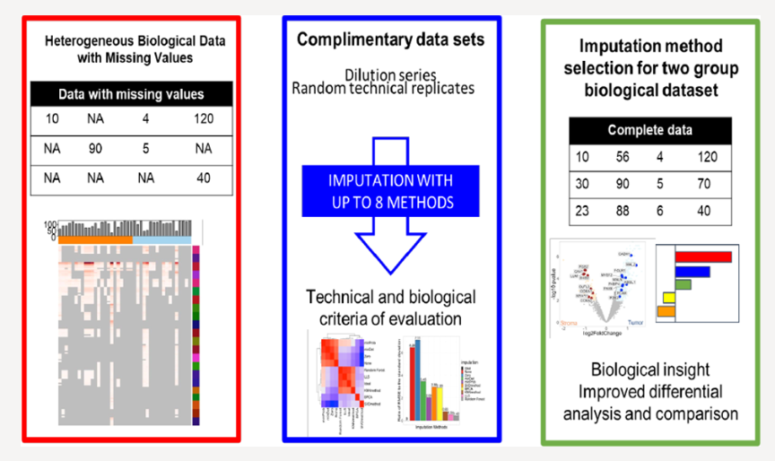

A Simple Optimization Workflow to Enable Precise and Accurate Imputation of Missing Values in Proteomic Data Sets
DIA-MS, proteomics, missing values, imputation methods

Abstract
Missing values in proteomic data sets have real consequences on downstream data analysis and reproducibility. Although several imputation methods exist to handle missing values, no single imputation method is best suited for a diverse range of data sets, and no clear strategy exists for evaluating imputation methods for clinical DIA-MS data sets, especially at different levels of protein quantification. To navigate through the different imputation strategies available in the literature, we have established a strategy to assess imputation methods on clinical label-free DIA-MS data sets. We used three DIA-MS data sets with real missing values to evaluate eight imputation methods with multiple parameters at different levels of protein quantification: a dilution series data set, a small pilot data set, and a clinical proteomic data set comparing paired tumor and stroma tissue. We found that imputation methods based on local structures within the data, like local least-squares (LLS) and random forest (RF), worked well in our dilution series data set, whereas imputation methods based on global structures within the data, like BPCA, performed well in the other two data sets. We also found that imputation at the most basic protein quantification level—fragment level—improved accuracy and the number of proteins quantified. With this analytical framework, we quickly and cost-effectively evaluated different imputation methods using two smaller complementary data sets to narrow down to the larger proteomic data set’s most accurate methods. This acquisition strategy allowed us to provide reproducible evidence of the accuracy of the imputation method, even in the absence of a ground truth. Overall, this study indicates that the most suitable imputation method relies on the overall structure of the data set and provides an example of an analytic framework that may assist in identifying the most appropriate imputation strategies for the differential analysis of proteins.